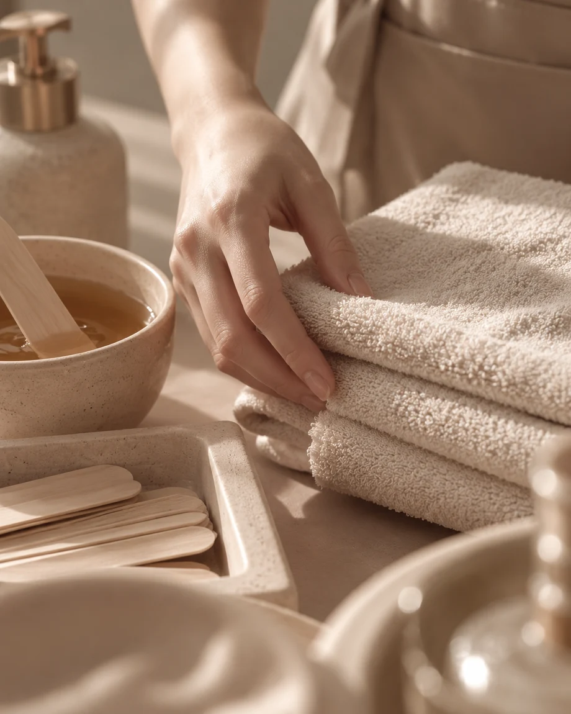
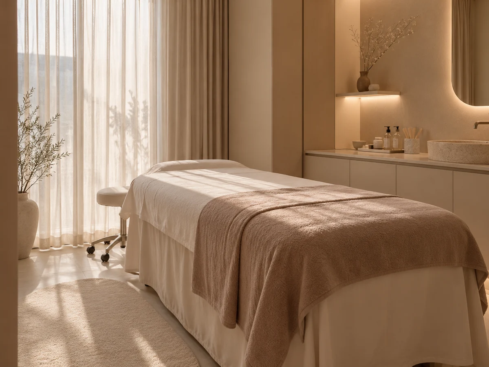

당신의 결을,먼저 생각합니다.
내 피부에 맞는 방식은 따로 있으니까.
한 사람의 피부결을 생각하는 1:1 맞춤형 프리미엄 왁싱.
01 / OUR POINT OF VIEW
우리가 먼저 살피는 것은
눈에 보이는 결과보다
당신의 피부가 가진 결.
뷰왁싱의 프리미엄은 화려한 수식어가 아니라, 한 사람을 위한 주의 깊은 태도에서 시작됩니다. 다름을 이해하고, 그에 맞게 접근하는 것. 그 작은 차이를 소중히 생각합니다.
02 / THE VUE APPROACH
섬세함에는
나름의 순서가 있습니다.
세 가지 장면을 선택해 뷰왁싱이 중요하게 생각하는 관리의 태도를 살펴보세요. 실제 시술 절차는 상담 시 확인이 필요합니다.
같은 피부는 없으니까.
원하는 관리와 현재의 피부 컨디션. 당신이 먼저 들려주는 이야기가 맞춤 경험의 출발점입니다.
당신의 이야기에 맞춰.
희망 부위와 이전 경험, 궁금한 점을 함께 정리합니다. 시술 가능 여부와 구체적인 관리 방향은 상담을 통해 확인합니다.
작은 질문까지 남김없이.
방문 전 준비부터 관리 후 궁금증까지. 아래에서 지금 필요한 이야기를 선택하고 나만의 상담 메모로 이어가세요.
LISTEN FIRST
먼저, 살피는 시간원하는 시술과 피부 컨디션을 충분히 이야기하는 것에서 시작합니다.


03 / SENSE OF SPACE
머무는 순간에도
섬세함이 느껴지도록.
THE VUE PHILOSOPHY
모든 피부가 다르기에,
아름다움도 한 가지일 수는 없습니다.
04 / BEFORE YOUR VISIT
방문 전,
궁금한 이야기.
불확실한 정보를 확답처럼 제공하지 않습니다. 구체적인 시술 방침과 운영 정보는 매장 확인 후 확정됩니다.
01처음 받아보는데 무엇을 물어보면 좋을까요?
02민감한 피부도 상담할 수 있나요?
03가격과 예약은 어디서 확인하나요?
05 / START A CONVERSATION
당신의 피부를 위한
첫 대화를 준비하세요.
아래에서 궁금한 내용을 선택하면 오른쪽 문의 문구가 실시간으로 바뀝니다. 예약을 대신하거나 정보를 서버로 전송하지 않습니다.
01. 어떤 점이 궁금하신가요?
02. 미리 전하고 싶은 피부 관련 참고사항은?
03. 추가 질문이 있다면 적어 주세요.
* 건강상 민감한 세부 정보는 여기에 기재할 필요가 없습니다. 이 페이지는 내용을 서버에 저장하거나 전송하지 않습니다.